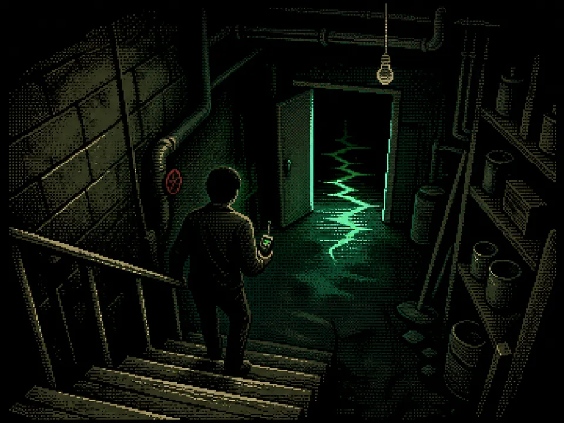

Case File Transcript
LOG STATUS: CLOSED
Ever get the nagging feeling that your life is a little too structured? That the same things happen to you at the same time, every single day? That somewhere, somehow, someone might be watching - or worse, writing - what happens next?
Two movies dared to ask a wild question: what if you weren't the author of your own life? What if you were just a character - in someone's novel, someone's screenplay, or maybe even someone's game - completely unaware of it?
Before you dismiss that idea... take this quiz first. We'll ask you a few questions about how you see yourself, how you move through the world, and how you handle the unexpected. Your answers might reveal something surprising about the kind of story you're actually living in.
Are you the hero? A side character? Or maybe... an NPC?
